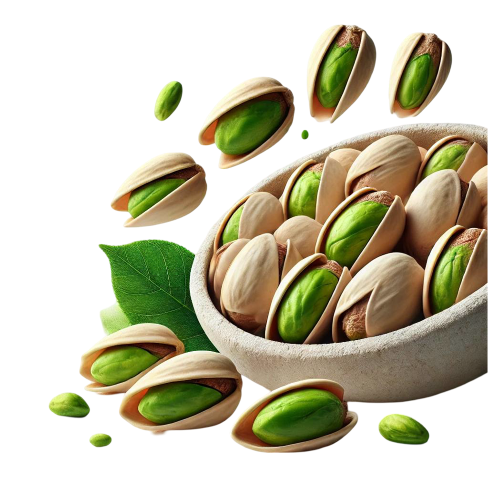

Titre
Des pistaches fraîches et authentiques, directement d’Iran
Texte publicitair
Découvrez la saveur exceptionnelle de nos pistaches premium !
Cueillies à la main dans les vergers fertiles d’Iran, nos pistaches offrent une qualité incomparable, un goût naturel exquis et une richesse nutritionnelle exceptionnelle.
Notre sélection comprend des pistaches variées (nature, salées, et aromatisées) idéales pour vos collations, apéritifs ou pour offrir en cadeau.
Commandez dès aujourd’hui et apportez une touche de raffinement persan à votre quotidien.
Avec les pistaches, savourez le goût de la santé ! Riches en énergie et en nutriments.
